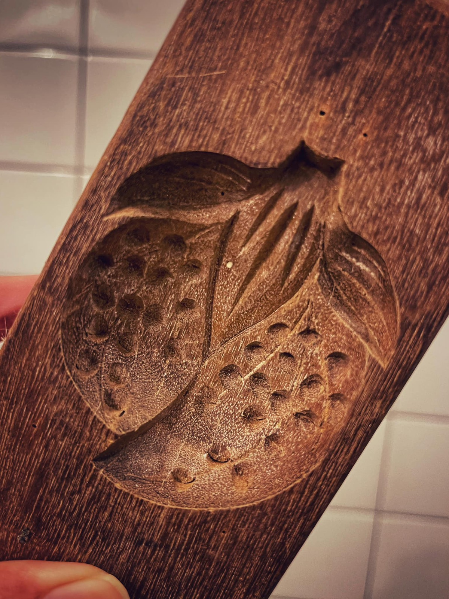
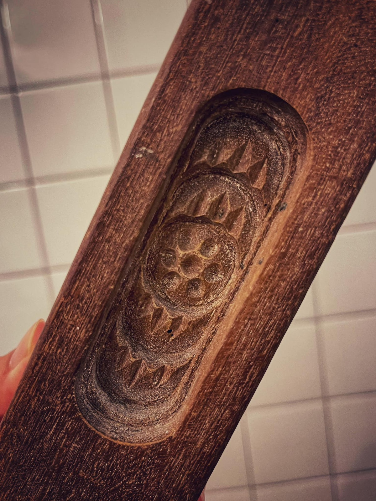

2024 · community · note
Joining the Month Three Festival on Soi Romanee in Phuket Old Town


Original text in Thai
หนมอังกู๊หรอยๆ 😋❤️
3 วันนี้ 15-17/2/24 เทศกาลเดือน 3 ภูเก็ตบ้านเรา จัดยาวๆ แค่ตั่วโพ้เมืองเก่าภูเก็ต หรอยยิ่งกว่าแค่ #ซอยรมณีย์ หรือ #ฮังฮาหล่าย (อาม่าเรียกพันนี้ แล้วยังว่าซอยนี้สมัยก่อนคนกาเออย่างแรง อาม่าชอบมาแล คน ญ สวยๆ)
แค่ซอย จี้จุ๋มจัดเต็มงาน #สารพัดสรรพศิลป์ สินค้าชุมชนงานดี ขายดีทุกงาน ขนกันมาทั้งคนทั้งของจากแทบทุกภาค เปิดแผงตั้งแต่หัวซอยไปจนเกือบท้ายซอย แถมด้วยพร้อพแต่งตัวฟินๆ + ตากล้องถ่ายรูปฟรียาวๆปาย 🔥✨
งานนี้ตั่วโก๊รับงาน ขายส้มเขียวหวานโคตรหวานส่งตรงจากไร่ พ่อค้าว่าฤดูนี้แระ ส้มหรอยฉ่ำสุด สาว่าเชียร์ไปเพ้อ หน้าก็เมือกขึ้นเพ้อ 😅
ซักพักมีน้องจากร้าน #torry เอาหนมอังกู๊มาให้ ❤️ เนือยแรงคนเดียวซัดหมดกล่อง ทั้งแป้งทั้งไส้หรอยดี บางชิ้นเหมือนมีแห้วด้านในด้วย ไม่รู้ใช่มั้ย แต่หรอยยย 😋
นึกได้ว่าแค่บ้านอาจ้อมีพิมหนมโบราณอยู่อันนึง มีอยู่ 3 ลาย ในหลาดเด๋วนี้เค้าทำกันแค่ลายเต่าลายเดียว อีก 2 ลายแทบไม่มีให้เห็นแอ่ ดีที่ร้านทอรี่เอามาทำให้แลได้กินกันอีก 🥰
ปล ลูกที่บุบบิบๆ ที่มีแห้วข้างใน น่าจะลายมังคุดนี้แอ๊ะนะ ถ้าไม่ใช่บอกโก๊กันนะ 😅❤️
ปล 2 ต่อเช้างานวันสุดท้ายแอ่ อย่าลืมมาเที่ยวกันอั๊นนะ 😇
#บ้านอาจ้อ ❤️